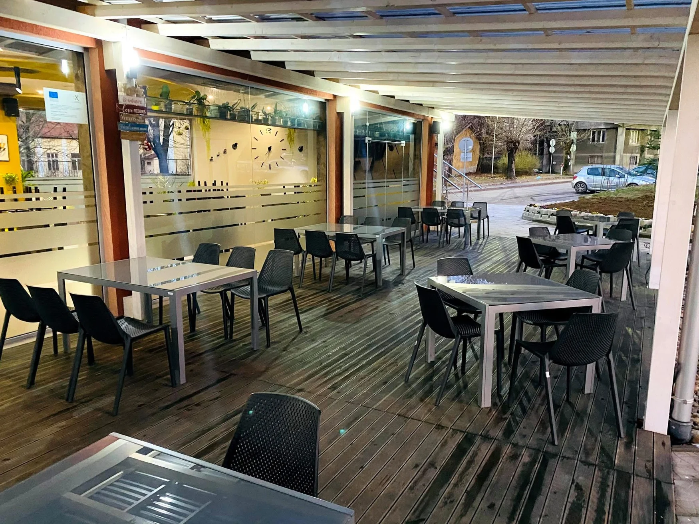

РЕСТОРАНТ ТЕРАСАТА
Добре дошли
Добре дошли
в Терасата
Уют, добра храна и приятна атмосфера
в сърцето на Кюстендил.
Обедно меню
Всеки делничен ден с различни предложения.
За
⌂ Поръчки за вкъщи до 11:30 ч.
Виж цялото обедно меню

Празненства и събития
Рождени дни, кръщенета, семейни събирания и фирмени поводи — празнувайте при нас.
Предлагаме готови куверти и индивидуални менюта, съобразени с вашите предпочитания.